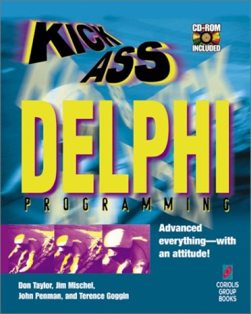

Kick Ass Delphi Programming
Published by : Coriolis Group Books
Writed by : Don Taylor, Jim Mischel, John Penman, Terence Goggin
Published date : 01/09/1996
ISBN-10 : 1576100448
ISBN-13 : 9781576100448
Language :  English
English
About Kick Ass Delphi Programming
In this book, you'll find the most advanced Delphi topics ever before collected between covers, explained by the gurus for the experts. Explore low-level Windows arcana, Internet development secrets, special Pentium-specific machine instructions, way-out-there database technology, and much more, all explained with a light heart and more than a touch of wit. Learn low-level Windows secrets from ace writer Don Taylor, in two brand new Ace Breakpoint programming adventures; build your own DLLs and screen savers in Delphi - no C++ required; go down to the metal with a Winsock VCL component, with which you can encapsulate any Internet protocol you need; create strikingly realistic 3D fractal landscapes in Delphi; break the relational database mold with recursive data and components to handle it; and monitor processes, handle Windows messaging, master drag 'n' drop, and a whole lot more!
Where to buy ?
This book has the ISBN13 "9781576100448".
If it is still available for sale, you can order it in your favorite bookstore, by its publisher or online at
Amazon CA,
Amazon FR,
Amazon JP,
Amazon UK or
Amazon USA depending on your country.